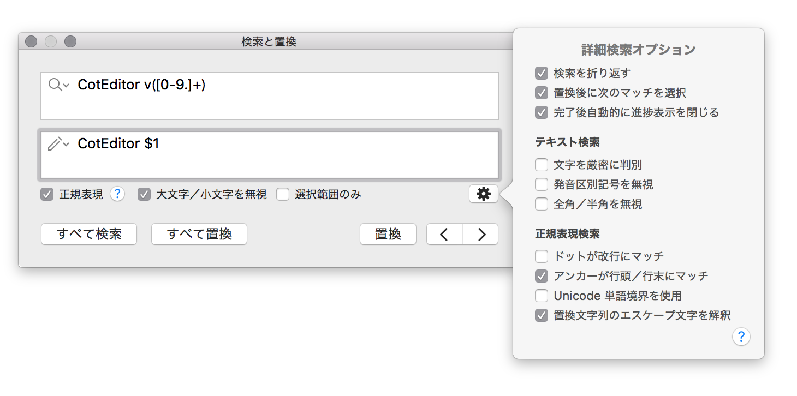

CotEditorは正規表現も使える強力な検索・置換機能を備えています。

虫眼鏡アイコンのついた検索フィールドに検索したい文字列を、ペンアイコンの付いた置換フィールドに置換したい文字列を入力して下さい。置換フィールドが空欄で置換したときは、一致したテキストは削除されます。
入力フィールドに改行/タブ文字を挿入するには、以下のキーを使います。
| 文字 | キーボード入力 |
|---|---|
| 改行 | Option + Return |
| タブ | Option + Tab |
フィールド内にある虫眼鏡／ペンアイコンから、過去の検索／置換文字列を選択して再利用できます。
| オプション | 説明 |
|---|---|
| 正規表現 | 正規表現を使って検索をします。 |
| 大文字／小文字を無視 | 大文字／小文字を区別せずに検索します。 |
| 選択範囲のみ | 検索対象を現在の選択範囲のみに限定します。 |
詳細オプションパネルからより細かな検索の振る舞いを設定できます。詳細オプションパネルは検索パネルのギアボタンをクリックすると開きます。
| オプション | 説明 |
|---|---|
| 検索を折り返す | カーソル以降に一致がなかった時に文書頭から一致を探します。 |
| 置換後に次の一致を選択 | 「置換」を実行した時に自動的に次の一致を選択します。 |
| 完了後自動的に進捗表示を閉じる | 「すべて検索」「すべて置換」などを実行した時に出る進捗ダイアログを終了後に自動的に閉じます。 |
正規表現がオフの時に有効にできるオプションです。
| オプション | 説明 | デフォルト |
|---|---|---|
| 単語に完全一致 | 入力した単語と完全に一致する単語のみに限定 | 無効 |
| 文字を厳密に判別 | バイトレベルで完全一致する文字列にのみ一致します。 | 無効 |
| 発音区別記号を無視 | 文字の発音記号を無視して検索します。（例: ö = o） | 無効 |
| 全角／半角を無視 | 文字の全角／半角を無視して検索します。（例: ａ = a） | 無効 |
正規表現がオンの時に有効にできるオプションです。
| オプション | 説明 | デフォルト |
|---|---|---|
| ドットが改行に一致 | .が改行記号を含むすべての文字に一致します。（単一行モード） | 無効 |
| アンカーが行頭／行末に一致 | ^と$がそれぞれ行頭と行末にも一致します。（複数行モード） | 有効 |
| Unicode単語境界を使用 | 単語の区切りにUnicode TR#29定義を使用します。 | 無効 |
| 置換文字列のエスケープ文字を解釈 | 置換文字列のバックスラッシュをエスケープ文字として解釈します。 | 有効 |